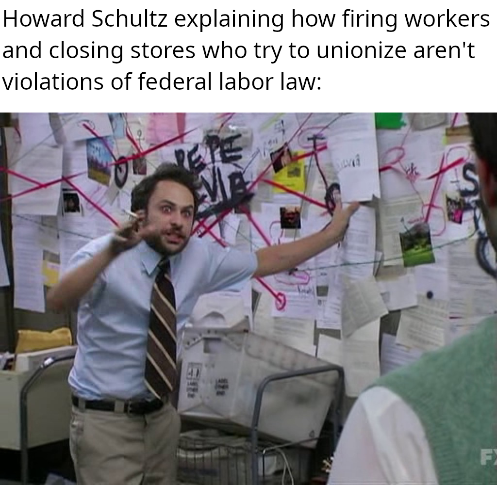

Ethics in Labor
Introduction
The rights of the worker are something which affect all of us
to some degree; however, the comparatively weak protections in the US
are not well enforced and companies often break the law to prioritize
profits over the well being of their employees. This has even worse
effects on those with less political power, such as immigrants who
are staying on a work visa and will lose it if they are fired, or who
are here undocumented and will just straight up be deported if they
speak out.
As things stand, current culture surrounding the economy in general
is unsustainable. The amount of focus on "hard work" by way of
hours put in is especially unsustainable.
Table of Contents
Introduction Meme Editorial Counter Argument Fable ListMeme
Editorial
Long have we been promised that things would improve with technological advances. With the number of promises made about how hours can be reduced with the same productivity, people should be working negative hours at this point. Instead, we work the same amount of time and get paid less when accounting for the cost of living increasing. All of this is in a time with the most productive workers ever seen in history. Many people are unhappy with their careers, doing pure overhead work It is becoming clear that things will not magically improve without someone doing anything about it. But what can a single worker even do? The obvious and correct answer is just about nothing; however, just about nothing isn't nothing. What a single worker can do is get other workers on their side. While it may not be the ideal long term solution, it is the best for the system we currently live in. The ability of the worker to collectively bargain in a union has been one of the few things in history that has actually improved things. The minimum wage, 40 hour work week, etc. have all resulted from this. In these trying times, it is in all of our best interest to try and organize as best we can, lest more pain and suffering be caused worldwide. There is absolutely no excuse for the USA, as the richest nation on the planet, to not have the basic protections and benefits enjoyed by those in other first world countries.
Counter Argument
Many may argue the same old, tired arguments: Isn't union membership expensive? Wouldn't prices go up to the point where better benefits wouldn't matter anyways? And why not just let the free market decide anyways?
Union membership itself, while costing a good bit yearly, more than pays for itself. Collective bargaining is a powerful tool to gain the benefits you as a worker deserve considering how much the company benefits from your labor. As for prices going up, they do, but not enough to matter. And the classic of letting the market decide. If there has been one thing anyone who has studied history should know, it is that there are many who will do anything for a dime; slavery, children in the mines and factories, etc. The free market is a good force for growth, but it does not have any inherent morality.
Fable
Once upon a time, there was a little girl. She was born into the
shining example of the nuclear family in the suburbs. In fact, the
stars practically aligned for her future. Her life should have been
picture perfect, but she couldn't stay lucky forever.
Her early years went pretty well. While she had the occasional
hiccup here and there, there was never anything too bad. Even most
of her middle school years went good, she was a fairly smart kid.
There was one small issue that popped up near the end of this. She
hardly saw her mother when she got a new job. When she did see her,
her mom was always tired and stressed about her job.
The two, while their relationship wasn't bad, there just wasn't all
that much there. Especially after some bigger hiccups in the girl's
life made her not very good at opening up to anyone. A previously
great family bond, destroyed by extreme hours and little else.
While I wish I could say that there was a happy ending to this
story, I can't. I'm the girl in this story, and to this day I can
hardly maintain a decent conversation with my own mother due to how
radically I have changed in the past few years with her being
unable to know me well these days. I can guarantee that I am not
the only kid who ever has or will have this experience. In fact, I
would be shocked if this wasn't an experience I share with
thousands if not millions of kids.
List
If you are sympathetic to the struggle for better working conditions, there are a plethora of ways to help.
- Buy products made with union labor. While these will often be more expensive, the quality may well make up for it. Buying 10 of the same thing that breaks is more expensive than one of it that doesn't as long as it isn't at least 10 times as expensive.
- Join or even form a union at your workplace!
- Find a like-minded activist group. Most are friendlier than they may seem from the outside!